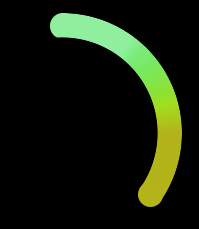
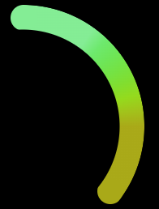

- 60 哪个 css 格式化工具是你的首选
- 59 CSS 选择器详解 12 个必知用法与最佳实践
- 58 动态视口单位之 dvh、svh、lvh
- 57 不规则造型按钮解决方案
- 56 不定宽文本溢出跑马灯效果完美解决方案
- 55 巧用 CSS 变量，实现动画函数复用
- 54 角向渐变的妙用
- 53 有趣的六芒星能力图动画
- 52 有意思的气泡 Loading 效果
- 51 CSS 原生支持的三角函数
- 50 有意思的网格下落加载效果
- 49 有意思的 Emoji 3D 表情切换效果
- 48 神奇的 3D 磨砂玻璃透视效果
- 47 抢先体验！超强大的 Anchor Positioning 锚点定位
- 46 CSS 也能实现碰撞检测
- 45 现代 CSS 解决方案 - 数学函数 Round
- 44 现代 CSS 解决方案 - 原生嵌套
- 43 神奇的背景，生化危机4日食 Loading 动画还原
- 42 当路径动画遇到滚动驱动
- 41 CSS 还原拉斯维加斯球数字动画
- 40 单标签下多色块随机文字随机颜色动画
- 39 CSS 也能实现 if 判断？实现动态高度下的不同样式展现
- 38 Flex 布局下居中溢出滚动截断问题
- 37 带圆角的虚线边框
- 36 现代 CSS 解决方案：文字颜色自动适配背景色
- 35 神奇的 3D 卡片反光闪烁动效
- 34 现代 CSS 解决方案：accent-color 强调色
- 33 巧用 has 和 drop-shadow 实现复杂布局效果
- 32 巧用 CSS + SVG 实现复杂线条光效动画
- 31 极具创意的鼠标交互动画
- 30 标准滚动条控制规范 scrollbar-color 和 scrollbar-width
- 29 类 ChatGpt 多行文本打字效果
- 28 神奇的卡片 Hover 效果与 Blur 的特性探究
- 27 渐变边框文字效果
- 26 巧妙使用多种方式实现单侧阴影
- 25 全尺寸的带圆角的渐变边框
- 24 开发中保证你用得到的 css 小技巧
- 23 您应该了解的 15 个有用的 CSS 属性
- 22 CSS 行元素的截断样式 box-decoration-break 属性
- 21 用 SASS 简化媒体查询
- 20 为什么你应该停止使用传统的 margin 和 padding 来设置 CSS 样式
- 19 sass 优化响应式布局代码
- 18 盘点 CSS 文本两端对齐的 N 种方式
- 17 如何修改滚动条的样式
- 16 CSS 模拟图片透明的棋盘背景
- 15 文本描边完美实现
- 14 你需要自定义 @property 而不是 CSS 变量的情况
- 13 从高度 0 过渡到自动高度
- 12 一些 css 语法解释
- 11 scss 日常用法
- 10 sass 指南
- 09 CSS 颜色设置透明度的新姿势
- 08 CSS 属性 appearance
- 07 CSS 动画性能优化
- 06 CSS 功能特性
- 05 CSS 中的 var() 函数
- 04 15 个你不知道的 CSS 属性
- 03 will-change
- 02 normalize.css 清除元素默认样式
- 01 纯 CSS 获取屏幕宽高
有意思的气泡 Loading 效果
HaoTian · 2024-12-20 10:23:54
今日，群友提问，如何实现这么一个 Loading 效果：
这个确实有点意思，但是这是 CSS 能够完成的？
没错，这个效果中的核心气泡效果，其实借助 CSS 中的滤镜，能够比较轻松的实现，就是所需的元素可能多点。参考我们之前的：
圆弧的实现
首先，我们可能需要实现这样一段圆弧：
这里需要用到的技术是：
角向渐变 conic-gradient() + mask 以及两个伪元素。图片示意如下：
核心代码如下图：
<div class="g-container">
<div class="g-circle"></div>
</div>
:root {
--headColor: hsl(130, 75%, 75%);
--endColor: hsl(60, 75%, 40%);
}
.g-container {
position: relative;
background: #000;
}
.g-circle {
position: relative;
width: 300px;
height: 300px;
border-radius: 50%;
background: conic-gradient(
var(--headColor) 0,
var(--headColor) 10%,
hsl(120, 75%, 70%),
hsl(110, 75%, 65%),
hsl(100, 75%, 60%),
hsl(90, 75%, 55%),
hsl(80, 75%, 50%),
hsl(70, 75%, 45%),
var(--endColor) 30%,
var(--endColor) 35%,
transparent 35%
);
mask: radial-gradient(
transparent,
transparent 119px,
#000 120px,
#000 120px,
#000 100%
);
&::before,
&::after {
content: "";
position: absolute;
inset: 0;
width: 30px;
height: 30px;
background: var(--headColor);
top: 0;
left: 135px;
border-radius: 50%;
}
&::after {
background: var(--endColor);
left: unset;
top: 214px;
right: 26px;
}
}
这样，我们就得到了这样一个图形：
气泡的实现
接下来，我们来实现尾部气泡向外扩散的效果。
由于这里涉及了多个气泡的不同运动动画，多个标签元素肯定是少不了了。
因此，接下来我们要做的事情：
- 我们需要多一组元素，将其绝对定位到上述圆环的头部或者尾部
- 给每个子元素随机设置多个大小不一的圆，颜色保持一致
- 给每个子元素随机设置不同方向的，向外扩散的位移动画
- 给每个子元素随机设置负的
animation-delay，造成动画上的先后顺序，并以此形成整个无限循环的气泡扩散动画
这里，由于有许多小气泡的动画，这个数量，我设置成了 100。那肯定是不能一个一个手写它们的动画代码，需要借助 SASS/LESS 等预处理器的循环、随机等函数。
核心代码如下：
<div class="g-container">
<div class="g-circle"></div>
<ul class="g-bubbles">
<li class="g-bubble"></li>
// ... 共 100 个 bubble 元素
<li class="g-bubble"></li>
</ul>
</div>
// 上面圆环的代码，保持一致，下面只补充气泡动画的代码
.g-bubbles {
position: absolute;
width: 30px;
height: 30px;
border-radius: 50px;
top: 100px;
left: 235px;
background: var(--headColor);
}
.g-bubble {
position: absolute;
border-radius: 50%;
background-color: inherit;
}
@for $i from 1 through 100 {
.g-bubble:nth-child(#{$i}) {
--rotate: calc(#{random(360)} * 1deg);
--dis: calc(#{random(100)} * 1px);
--width: calc(3px + #{random(25)} * 1px);
top: 50%;
left: 50%;
transform: translate(-50%, -50%);
width: var(--width);
height: var(--width);
animation: move
#{(random(1500) + 1500) /
1000}s
ease-in-out -#{random(3000) /
1000}s
infinite;
}
}
@keyframes move {
0% {
transform: translate(-50%, -50%) rotate(0deg);
}
75% {
opacity: 0.9;
}
100% {
transform: rotateZ(var(--rotate)) translate(-50%, var(--dis));
opacity: 0.4;
}
}
核心在于 @for $i from 1 through 100 { } 这段 SASS 代码内部，我们实现了上面说的 (2)(3)(4) 的功能点！
这样，我们就得到了这样一个效果，在尾部有大量气泡动画，不断向外扩散的效果：
借助滤镜实现粘性气泡效果
OK，到这里整个效果基本就做完了。当然，也是剩下最后最重要的一步，需要让多个气泡之间产生一种粘性融合的效果。
这个技巧在此前非常多篇文章中，也频繁提及过，就是利用 filter: contrast() 滤镜与 filter: blur() 滤镜。
如果你还不了解这个技巧，可以戳我的这篇文章看看：你所不知道的 CSS 滤镜技巧与细节
简述下该技巧：
单独将两个滤镜拿出来，它们的作用分别是：
filter: blur()： 给图像设置高斯模糊效果。filter: contrast()： 调整图像的对比度。
但是，当他们“合体”的时候，产生了奇妙的融合现象。

仔细看两圆相交的过程，在边与边接触的时候，会产生一种边界融合的效果，通过对比度滤镜把高斯模糊的模糊边缘给干掉，利用高斯模糊实现融合效果。
基于此，我们再简单改造下我们的 CSS 代码，所需要加的代码量非常少：
- 加上滤镜 blur() 和 contrast() ，形成融合粘性效果
- 加上整个圆环的旋转即可效果
- 加上滤镜 hue-rotate()，实现色彩的变换动画
.g-container {
// ... 保持一致
background: #000;
filter: blur(3px) contrast(5);
animation: rotate 4s infinite linear;
}
@keyframes rotate {
100% {
transform: rotate(360deg);
filter: blur(3px) contrast(5) hue-rotate(360deg);
}
}
就这样，我们就大致还原了题图的效果：
完整的代码，你可以戳这里：CodePen Demo -- Pure CSS Loading Animation
修复违和感
当然，上面的效果，乍一看还行，仔细看，违和感很重。
原因在，扩散出来的小球也跟着一起半圆环一起进行了旋转动画，看上去就有点奇怪。
正确的做法应该是，圆环尾部的气泡应该是原地发散消失的。
那么，怎么能够做到气泡效果，一直发生在圆环的尾部，同时消失的时候有不跟着整个圆环一起进行旋转呢？我们想要的最终效果，应该是这样：

这里，我们可以拆解一下。想象，如果去掉圆环的旋转，其实我们只需要实现这样一个效果即可：

整个动画的核心就转变成了如何实现这么一个效果。看似复杂，其实也很好做。
首先，我们重新改造一下上述的 .g-bubbles。
- 生成 N 个一样大小的小球元素，定位在整个容器的中间
<div class="g-container">
<div class="g-circle"></div>
<ul class="g-bubbles">
<li class="g-bubble"></li>
// ... 共 200 个 bubble 元素
<li class="g-bubble"></li>
</ul>
</div>
.g-bubbles {
position: absolute;
width: 30px;
height: 30px;
transform: translate(-50%, -50%);
left: 50%;
top: 50%;
border-radius: 50px;
}
.g-bubble {
position: absolute;
inset: 0;
border-radius: 50%;
background: hsl(60, 75%, 40%);
}
得到这么一个效果，所以圆形小点，都暂时汇聚在容器的中心：
这里需要简单解释一下：
其次，我们借助 SASS，按照元素的顺序，把它们顺序排列到圆环轨迹之上：
$count: 200;
@for $i from 1 through $count {
.g-bubble:nth-child(#{$i}) {
--rotate: calc(#{360 / $count} * #{$i} * 1deg);
transform: rotateZ(var(--rotate)) translate(135px, 0);
opacity: 1;
}
}
由于我们设置了 div 小球的个数为 200 个，这样，我们就得到了一圈由 200 个圆形小球形成的圆环：
接下来这一步非常重要，我们设定一个动画：
- 让每个小球在动画的
75% ~ 100%阶段做透明度从 1 到 0 的变换，而0% ~ 75%的阶段保持透明度为 0 - 让 200 个 div 依次进行这个动画
依次消失：
@for $i from 1 through $count {
.g-bubble:nth-child(#{$i}) {
--rotate: calc(#{360 / $count} * #{$i} * 1deg);
--delayTime: calc(4000 * #{$i / $count} * -1ms);
transform: rotateZ(var(--rotate)) translate(135px, 0);
opacity: 1;
animation: showAndHide 4000ms linear var(--delayTime) infinite;
}
}
@keyframes showAndHide {
0% {
opacity: 0;
}
75% {
opacity: 0;
}
75.1% {
opacity: 1;
}
100% {
opacity: 0;
}
}
这样，我们就得到了一个圆形小球气泡围绕圆环渐次消失的效果：
配合上整个圆环，效果就会是这样：
很接近了，但是没有随机的感觉，气泡也没有散开的动画。解决的方案：
- 所以我们需要让气泡在执行透明度变化的同时，进行一个随机的发散位移
- 小圆形气泡的大小也可以带上一点随机，同时，在动画过程逐渐缩小
当然，整个动画的基础，还是在容器设置了 滤镜 blur() 和 contrast() 的加持之下的，这样，我们给气泡再补上随机动画散开及缩放的动画：
@for $i from 1 through $count {
.g-bubble:nth-child(#{$i}) {
--rotate: calc(#{360 / $count} * #{$i} * 1deg);
--delayTime: calc(4000 * #{$i / $count} * -1ms);
--scale: #{0.4 + random(10) / 10};
--x: #{-100 + random(200)}px;
--y: #{-100 + random(200)}px;
transform: rotateZ(var(--rotate)) translate(135px, 0);
opacity: 1;
animation: showAndHide 4000ms linear var(--delayTime) infinite;
}
}
@keyframes showAndHide {
0% {
transform: rotateZ(var(--rotate)) translate(135px, 0);
opacity: 0;
}
75% {
opacity: 0;
}
75.1% {
transform: rotateZ(var(--rotate)) translate(135px, 0) scale(var(--scale));
opacity: 1;
}
100% {
transform: rotateZ(var(--rotate)) translate(
calc(135px + var(--x)),
var(--y)
)
scale(0.2);
opacity: 0;
}
}
只看一圈的气泡圆形，我们能得到了这样的效果：
配合上圆环的效果：
配合上父容器的 filter: hue-rotate() 动画，就能实现颜色的动态变换，得到我们最终想要的效果：
这样，没有了第一版本的违和感，整个效果也显得比较自然。
完整的代码，你可以戳这里：CodePen Demo -- Pure CSS Loading Animation